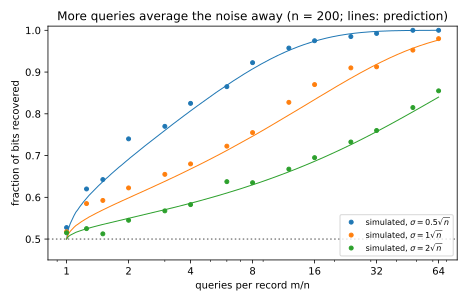
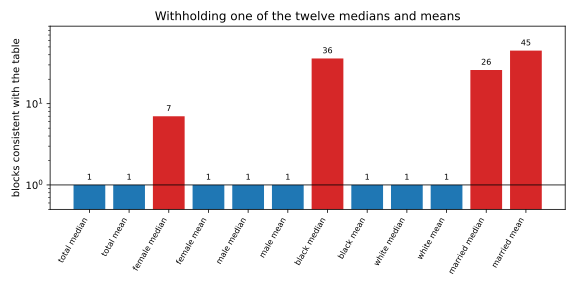

17 Reconstruction attacks
17.1 Why this matters
A hospital keeps one sensitive bit per patient, whether they tested positive, and never releases it. It only answers counting questions, “how many of patients 3, 17, 42, … tested positive?”, and adds a little noise to every answer. Is that safe? Dinur and Nissim (2003) showed that it is not, unless the noise is large. Each answer is a linear equation whose unknowns are the patients’ bits, so a table of aggregates is a system of equations, and enough equations with small enough errors determine the unknowns.
The error of the answers is therefore the only thing standing between the attacker and the solution, and it fails in two ways. It can be too small: to hide a wrong guess, the error must be as large as the amount by which that guess changes the answers, which for a random query is about \(\sqrt n\), where \(n\) is the number of people. Or there can be too many answers: errors that are independent from answer to answer are averaged away by asking more. Dwork and Roth call this the Fundamental Law of Information Recovery: overly accurate answers to too many questions destroy privacy. If you run or audit a system that answers aggregate queries, check both.
Throughout, the secret is a bit vector \(d = (d_1, \dots, d_n)\), one bit per person. A subset-sum query asks how many people in a set \(S\) have bit 1. The curator, the party holding \(d\), answers \(m\) queries, each with an error, and “error at most \(E\)” means every answer is within \(E\) of the truth.
17.2 How accurate is too accurate?
Start with the strongest attacker, who may ask all \(2^n\) subset sums, and throws away every candidate database that contradicts an answer by more than the curator’s error allows. Any candidate \(c\) that survives is close to \(d\), for a simple reason. The bits where \(c\) is wrong form two sets: the ones it missed and the ones it invented. The attacker asked about both. On the set of missed ones, \(d\) sums to the size of the set and \(c\) to zero, yet both are within \(E\) of the same published answer, so the set has at most \(2E\) people; the same holds for the invented ones. A surviving candidate therefore has at most \(4E\) wrong bits, and the bound is tight. With \(n = 10^6\) people and every answer off by up to 1000, the attacker gets at most 4,000 bits wrong, 0.4% of them. Error well below \(n\) is useless against unlimited queries; a curator whose error lets the attacker recover all but a vanishing fraction of the bits is called blatantly non-private.
Dinur and Nissim’s main result replaces the \(2^n\) questions with random subsets, each including every person with probability \(\frac12\). The price is a lower threshold, and the reason is that a random query cannot aim. Suppose a candidate is wrong on \(k\) bits. A query aimed at exactly those bits would move the answer by \(k\), but a random query picks up each wrong bit with probability \(\frac12\), so its sum over them behaves like \(k\) coin flips and moves by only about \(\sqrt k\). An error below that scale cannot hide a candidate wrong on a constant fraction of the bits. So with error well below \(\sqrt n\) on a number of random queries slightly above \(n\), a linear-program decoder recovers all but a small fraction of the bits in polynomial time: it finds any vector with entries between 0 and 1 whose answers are within \(E\) of every published answer, and rounds it.
The proved constants are poor; at \(n = 1000\) the proof needs about \(33n\) queries. Don’t read them as a safety margin, because the scaling is what matters and real attacks beat the constants easily: least squares with \(m = 4n\) already recovers 96.55% of the bits under Gaussian noise of \(\sigma = 0.25\sqrt n\) (Section 17.3). Random queries aren’t needed either. Cohen and Nissim (2020) ran a linear-program reconstruction against a commercial query system that added noise to its answers and recovered most of a secret column.
The same logic says which distortions don’t count as noise. A curator that rounds every answer to a multiple of 4 has error at most 2, but the rounding is a known function of the true sum, so an attacker who applies it to each candidate’s answers recovers \(d\) exactly. And a few wildly wrong answers don’t help the curator: a variant of the decoder that minimises the total absolute error, instead of requiring every answer to fit, tolerates a constant fraction of them (Dwork, McSherry and Talwar, 2007).
17.3 Least squares under random and worst-case error
The attack you would actually run is simpler. Least squares picks the vector whose answers come closest to the published ones in squared distance, then clips each coordinate to \([0, 1]\) and rounds it. Because its output is a linear function of the answers, its error is a linear function of the curator’s, and you can predict its success.
With independent Gaussian noise of standard deviation \(\sigma\) on each of \(m\) random subset sums, each decoded coordinate is off by a normal error with standard deviation about \(2\sigma/\sqrt{m - n}\). The reasoning is the familiar one for averages: \(n\) equations are needed to pin down \(n\) unknowns, and the \(m - n\) beyond those average the noise down by \(\sqrt{m - n}\); the factor 2 appears because a random query includes each person only half the time. A bit comes out wrong when its error crosses \(\frac12\), so the expected fraction recovered is \[\Phi\left(\frac{\sqrt{m - n}}{4\sigma}\right), \tag{17.1}\] where \(\Phi\) is the standard normal cumulative distribution function. Two consequences follow. At a fixed ratio \(m/n\), only \(\sigma/\sqrt n\) matters, so \(\sqrt n\) is again the scale of the threat. And at a fixed \(\sigma\) the fraction tends to 1 as \(m\) grows, so to hold the attack at a fixed accuracy the noise must grow like \(\sqrt m\).
Table 17.1 checks the formula on four random databases of \(n = 500\) bits with \(m = 2000\) queries.
| \(\sigma/\sqrt n\) | 0.1 | 0.25 | 0.5 | 1 | 2 |
|---|---|---|---|---|---|
| \(\sigma\) | 2.24 | 5.59 | 11.18 | 22.36 | 44.72 |
| Recovered, simulated | 1.0000 | 0.9655 | 0.8130 | 0.6550 | 0.5875 |
| Recovered, Equation 17.1 | 1.0000 | 0.9585 | 0.8069 | 0.6676 | 0.5858 |
Noise of order \(\sqrt n\) is not automatically safe: at \(\sigma = 0.25\sqrt n\), 96.55% of the bits come back, and recovery degrades smoothly instead of switching off at a threshold. The column at \(\sigma = 2\sqrt n\) shows the second failure. That curator looks safe at \(m = 4n\), where only 0.5875 of the bits come back, but if it answers any number of queries at the same noise level, an attacker who asks \(m = 106.1\,n\) recovers 90% of them (Figure 17.1). A bound on the error of each answer protects nothing when the number of answers is unbounded; the error budget has to cover all of them together.

Gaussian noise is also the friendly case. Least squares amplifies errors most along one direction, that of the smallest singular value \(s_{\min}(A)\) of the query matrix, and independent noise points in all directions equally. A curator that pushes every error along that weakest direction does far more damage: at \(E = 0.25\sqrt n = 5.59\) it causes 143 wrong bits, against about 17 for Gaussian noise of the same scale. The general guarantee, at most \(4mE^2/s_{\min}(A)^2\) wrong bits, covers every curator. So when a system’s errors are not independent random noise, test it with errors chosen against the decoder, not only with Gaussian noise of the same size.
17.4 The Fundamental Law: what stops reconstruction, and what doesn’t
Is error of order \(\sqrt n\) enough to stop reconstruction? A sampling curator shows it can be. It keeps each person with probability \(p\) in a secret set, answers every query from that set, and scales up by \(1/p\) so that answers are right on average. Each answer’s error is then a sum of independent zero-mean terms, one per person, so it is of order \(\sqrt n\), and the largest of all \(m\) errors is only a logarithmic factor above that, of order \(\sqrt{n\log m}\). But the people left out never affect any answer, so nothing reveals their bits, and no attacker recovers more than a fraction \(p + \frac{1 - p}{2}\) of a uniformly random \(d\) on average: the sampled bits, plus a coin flip for the rest. At \(n = 500\), \(m = 2000\) and \(p = \frac12\), the largest error is 28.00, or \(1.25\sqrt n\), and least squares recovers 0.7560 of the bits, right at the ceiling of three quarters.
That is not privacy, though. The same curator answers exactly for the people in its sample, and an attacker with enough queries learns all of their bits: half the people are fully exposed so that the other half can be fully hidden. Stopping blatant reconstruction is a much weaker goal than protecting everyone. A guarantee has to hold for every individual, which is what The definition of differential privacy provides, and it has to control both halves of the law, the error scale and the number of answers. That is why differential privacy tracks a budget spent across queries.
How few queries can any attack use? Count bits. The secret carries \(n\) bits; an answer that takes at most \(V\) values carries at most \(\log_2 V\); and a guess that may be wrong on a fraction \(\beta\) of the bits still leaves \(h(\beta)\) bits of uncertainty per person, where \(h(\beta) = -\beta\log_2\beta - (1 - \beta)\log_2(1 - \beta)\) is the binary entropy. So any attack needs at least \[m \ge \frac{n\,(1 - h(\beta))}{\log_2 V} \tag{17.2}\] queries. At \(n = 1000\) and 5% wrong bits, exact counts need at least 71.6 queries, and rounding every count to a multiple of 32 raises the floor only to 141.5. Coarser answers carry fewer bits each, but this is a floor on what an attack needs, not a defence: a curator that answers unlimited queries has only roughly doubled the minimum the attacker must ask, and the attacker can simply ask more.
17.5 Reconstructing a census block
Statistical offices publish tables, not query answers, but every cell is a query, and many tables come from the same confidential records. Garfinkel, Abowd and Martindale (2019) showed how far this goes with a toy block of seven people, each with an age, a sex, a race and a marital status, where nobody under 18 is married. Table 17.2 is everything published about such a block. Means to two decimals give exact sums, since the sum is a whole number: \(34.29 \times 7 = 240.03\), so the ages total 240.
| Group | Count | Median age | Mean age |
|---|---|---|---|
| Total | 7 | 33 | 34.29 |
| Female | 4 | 31 | 30.25 |
| Male | 3 | 33 | 39.67 |
| Black | 4 | 33.5 | 36.25 |
| White | 3 | 33 | 31.67 |
| Married | 4 | 43.5 | 47.75 |
A constraint solver searches for every block consistent with these eighteen numbers, and each table cuts the candidates down: of 14,790 age vectors that fit the sex statistics, 387 admit a race split, 33 a marital split, and one all three. It is the true block (Table 17.3).
| Person | 1 | 2 | 3 | 4 | 5 | 6 | 7 |
|---|---|---|---|---|---|---|---|
| Age | 7 | 15 | 27 | 33 | 35 | 52 | 71 |
| Sex | F | M | F | M | F | F | M |
| Race | B | B | W | W | W | B | B |
| Married | no | no | no | yes | yes | yes | yes |
Withholding a number rarely helps, because the remaining numbers usually imply it: eight of the twelve medians and means leave the block unique when withheld (Figure 17.2). The worst case for the attacker, withholding the married mean, the only statistic about the single people’s ages, still leaves only 45 blocks, and 51% of them have the true sex, race and marital pattern of all seven people.

Real publications are more exposed than the toy, not less: they cross-classify many variables at many geographic levels, which is the “too many questions” half of the law. And the usual protections leave most constraints exact. Swapping a small fraction of households between blocks, the main protection of the 2010 Census, changes some answers; coarsening ages and suppressing small cells remove some constraints; the rest still bind. The Census Bureau’s own reconstruction of the 2010 Census, described by Abowd (2021), rebuilt a record for each of the 308,745,538 people counted. About 46% matched a real person exactly on block, sex, age, race and ethnicity, and linking to commercial data confirmed the identity of about 17% of the population. The Bureau’s response was to move the 2020 Census to a method based on differential privacy.
17.6 Code
To audit a query system or plan a release, three numbers come first: what fraction least squares would recover at your noise level, how many queries per person push it to a target, and the fewest queries any attack needs. The snippet computes all three, using the finite-\(m\) variance \(4\sigma^2 n/((n + 1)(m - n - 1))\) that the full edition derives, which is about \(4\sigma^2/(m - n)\).
from math import log2, sqrt
from statistics import NormalDist
PHI = NormalDist()
def ls_recovered(n: int, m: int, sigma: float) -> float:
"""Predicted fraction of n secret bits that least squares recovers from m noisy random subset sums."""
sd = 2 * sigma * sqrt(n / ((n + 1) * (m - n - 1))) # spread of each decoded bit's error
return PHI.cdf(0.5 / sd) # a bit comes out wrong when its error crosses 1/2
def queries_per_person(target: float, sigma_over_sqrt_n: float) -> float:
"""m/n at which least squares recovers a fraction `target` of the bits, for noise sigma = c * sqrt(n)."""
return 1 + (4 * sigma_over_sqrt_n * PHI.inv_cdf(target)) ** 2
def binary_entropy(p: float) -> float:
return -p * log2(p) - (1 - p) * log2(1 - p)
def min_queries(n: int, wrong: float, values: int) -> float:
"""Fewest answers, each taking at most `values` values, from which any attack gets all but n * wrong bits."""
return n * (1 - binary_entropy(wrong)) / log2(values)
n, m = 500, 2000
print(" ".join(f"{ls_recovered(n, m, c * sqrt(n)):.4f}" for c in (0.1, 0.25, 0.5, 1, 2))) # 1.0000 0.9585 0.8069 0.6676 0.5858
print(f"{queries_per_person(0.9, 2.0):.1f}") # 106.1
print(f"{min_queries(1000, 0.05, 1001):.1f}") # 71.6
print(f"{min_queries(1000, 0.05, 1000 // 10 + 2):.1f}") # 106.9
print(f"{min_queries(1000, 0.05, 1000 // 32 + 2):.1f}") # 141.5The first line is the prediction row of Table 17.1. The full edition’s script, reconstruction.py, runs the attacks themselves: the exponential attack, least squares under random and worst-case error, the sampling curator and the census-block search.
uv run python code/part02-attacks/reconstruction.py17.7 Cheat sheet
| Setting | Result | Notes |
|---|---|---|
| All \(2^n\) subset sums, error \(\le E\) | Any consistent candidate has \(\le 4E\) wrong bits | Tight; error \(o(n)\) is blatantly non-private |
| Random subset sums, error \(\le E\) | Error well below \(\sqrt n\) on about \(n\log n\) queries: a linear program recovers almost all bits | Proved constants are pessimistic |
| Least squares, Gaussian noise \(\sigma\) | Fraction recovered \(\approx \Phi(\sqrt{m - n}/(4\sigma))\) | Noise must grow like \(\sqrt m\) to hold it fixed |
| Least squares, worst-case error | Wrong bits \(\le 4mE^2/s_{\min}(A)^2\) | Adversarial errors hurt more than random ones |
| Sampling curator | Error \(O(\sqrt{n\log m})\); recovery \(\le p + \frac{1 - p}{2}\) | Stops reconstruction, exposes the sampled people |
| Information bound | \(m \ge n(1 - h(\beta))/\log_2 V\) | Exact counts: of order \(n/\log n\) queries |
| Published tables | Each cell is a constraint | Swapping, coarsening and suppression leave most constraints exact |
Rules of thumb
- The threat scale of a random subset-sum query is \(\sqrt n\), of the worst query \(n\). Errors well below that reveal the database.
- Budget the error over all answers, not per answer.
- Rounding, swapping and suppression are not noise: an attacker can simulate them or route around them.
- Stopping reconstruction is not privacy; ask what the system guarantees for each individual.
17.8 Further reading
- Dinur & Nissim, “Revealing Information while Preserving Privacy” (PODS 2003): the original attacks and the notion of blatant non-privacy.
- Dwork, Smith, Steinke & Ullman, “Exposed! A Survey of Attacks on Private Data” (Annual Review of Statistics and Its Application, 2017): a readable survey of reconstruction and tracing attacks.
- Garfinkel, Abowd & Martindale, “Understanding Database Reconstruction Attacks on Public Data” (CACM 2019): the seven-person block reconstructed with a solver.
- Cohen & Nissim, “Linear Program Reconstruction in Practice” (Journal of Privacy and Confidentiality, 2020): the attack against a deployed query system.
Derivations. Every result in this chapter is derived step by step in the full edition’s chapter.